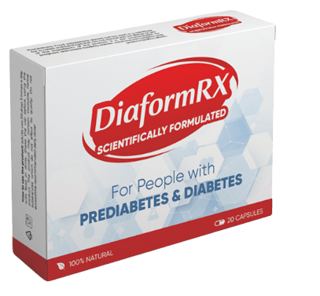
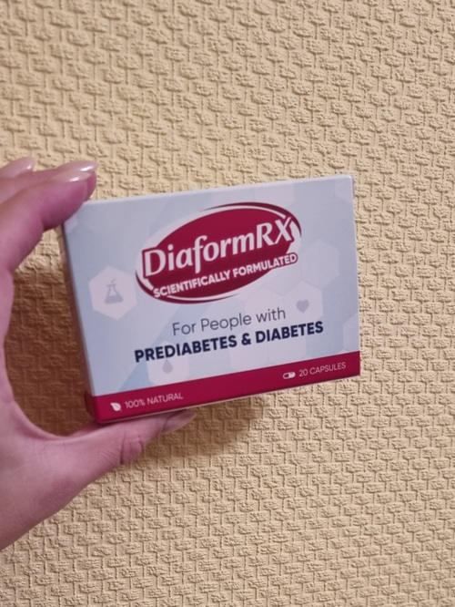

Desde hace varios años en el mercado europeo existe un maravilloso medicamento contra la diabetes: DiaformRX Debido a su efectividad, él supera en varias veces todos los medicamentos y fármacos. Tiene por objeto la eliminación de las razones y no de los síntomas de la diabetes. Al mismo tiempo no afecta la salud, no va acompañado de riesgos de un mayor deterioro (a diferencia de otros medicamentos) y su precio es mucho más barato.
Especialmente para comparar dos medicamentos hemos realizado esta tabla:
|
 DiaformRX |
Productos farmacéuticos |
|
|---|---|---|
| Precio: | 39€ | 70-100 €/ pza. (tratamiento completo desde 400 €) |
| Efectos: | Estabilizan el nivel de azúcar en
la sangre garantizando una remisión a largo plazo. |
Mantiene un estado normal del azúcar únicamente cuando se administra el medicamento. |
| Efectos adicionales: | ºAumenta la producción de insulina.
º Estabiliza el nivel de azúcar en la sangre. º Previene la hipoglicemia |
No tiene. |
| Efectos secundarios, ni daños para el organismo. | No tiene. | Enrojecimiento. Hinchazón. Aparición de secreciones. Vulneración al funcionamiento del tracto gastrointestinal |
| Principios de funcionamiento: | Afecta las causas de la diabetes, eliminándola Normaliza el metabolismo de los glúcidos. |
En
general no restablece el nivel de azúcar, únicamente lo normaliza ligeramente. |
| Composición: | Compuesto único de plantas
medicinales ¡No es un suplemento adicional! |
¡Es un suplemento adicional!
Contiene componentes que causan efectos secundarios. |
| Clasificación de venta en Europa durante de : | 1 (+53) | 2 (-1) |
La principal ventaja de DiaformRX es que a diferencia de los medicamentos modernos para curar la diabetes, los cuales tienen por objeto la eliminación de los síntomas de la enfermedad, y no sus causas, las cápsulas contra la diabetes DiaformRX tienen por objeto una remisión a largo plazo. Desde el primer tratamiento, la diabetes gradualmente se elimina, restableciéndose el funcionamiento de todos los sistemas del organismo. .
- Aumenta la producción de insulina.
- Protege contra un alto contenido de azúcar.
- Previene la hipoglicemia.
- Restaura las funciones hepáticas y del páncreas.
- Normaliza el metabolismo de los glúcidos.
- Estabiliza el nivel de azúcar.
- Normaliza todos los procesos metabólicos.
DiaformRX ha causado en Europa una verdadera revolución entre los medicamentos para curar la diabetes. Antes no existía tal efectivo y beneficioso medicamento. 10 años de investigaciones clínicas del medicamento mostraron que en el 75 % de los sujetos, el nivel de azúcar en la sangre se normalizó. En el 68 % de los pacientes los procesos metabólicos se recuperaron lo que condujo a la mejora de los sistemas endocrino, cardiovascular y digestivo. Prácticamente después de su aparición en el mercado DiaformRX superó todos los indicadores y actualmente es el medicamento principal para la cura de la diabetes.
¿Y qué ocurre en España?
Desde entonces no es presentado en las farmacias de España (E incluso, no lo estará en un tiempo cercano). Esto a pesar de que el medicamento pasó con éxito todas las pruebas clínicas y obtuvo todos los certificados necesarios. ¿Por qué están así las cosas con este único medicamento?
Realizamos una entrevista a uno de los grandes dueños de una red de farmacias en España, Carlos Martínez. Y esto fue lo que nos respondió. ¡Es una maravilla!
Monopolista de farmacias, Carlos Martínez
¿Cómo percibe el hecho de que un conocido medicamento en EE.UU. y algunos países de Europa aún no se vende en las farmacias de España? ¿Está usted al tanto de esto?
Sí, por supuesto estoy al tanto. DiaformRX es un excelente medicamento. Realmente ayuda en la cura de la diabetes, asimismo es mucho más efectivo que otros medicamentos. Nosotros lo hemos probado. Aproximadamente durante un mes, pero después lo retiramos de venta. Simplemente para nosotros no era rentable hacer esto. Lo mismo debe haber ocurrido en otras farmacias.
Vale la pena recordar que las farmacias, después de todo, son organizaciones mercantiles, las cuales como cualquier otra tienda tienen por objeto obtener el mayor beneficio posible. Nosotros tenemos una lista de medicamentos que obligatoriamente deben venderse (esta lista la hace el gobierno), pero DiaformRX no entra en ella.
¿DiaformRX tuvo bajas ventas?
Por el contrario, se vendió muy bien. Incluso con un alto sobreprecio. Usted comprende, un medicamento para curar la diabetes es una gran ganancia. DiaformRX, por así decirlo, cumple perfectamente con su trabajo. Como resultado las personas ya no acuden por productos similares. No tienen esta necesidad. Es por ello que las farmacias están perdiendo dinero. Y son pérdidas significativas.
Júzguelo por sí mismo. Sí, posiblemente esto no es del todo correcto, desde un punto de vista moral, pero esto es solo un negocio.
¡Es verdad!
¿Por qué no vender algo que ayuda, pero lo hace lentamente o en general algo que no cambie la situación para un mejor rumbo (o por el contrario, hacia un peor estado). Así las personas regresarán… Esto es un horror. Y lo peor es que en todas las regiones de España se tiene una situación similar. DiaformRX no se puede encontrar en las farmacias de España. ¡Y no por el hecho de que no ayude, sino por el contrario, ayuda muy bien! Por paradójico que parezca no puedes hacer nada con esto, las leyes están del lado de las farmacias.
Nosotros le pedimos su opinión al respecto a la doctora en medicina, Viridiana Resendiz.
Doctora en medicina, Doctora Viridiana Resendiz
Realmente los medicamentos presentado en las farmacias, simplemente no pueden ayudar a las personas a eliminar las causas de la diabetes. El tratamiento puede alargarse durante meses y existen casos en los que incluso toma años. Y no siempre se alcanzan los resultados deseados, por eso las grandes sumas de dinero invertido son en vano.
¿Qué puede decir sobre DiaformRX?
Hace poco, en uno de los simposios médicos internacionales, científicos Europeos presentaron al público una cura contra la diabetes. Este fue el medicamento DiaformRX. Nuestros científicos se interesaron mucho en él y se tomó la decisión de probarlo en España. Nosotros realizamos pruebas en nuestro centro médico. Reunimos a más de 100 voluntarios de diferentes edades en distintas etapas (prediabetes, diabetes tipo 2). También me inscribí como voluntaria, ya que es posible que estés al tanto que yo misma sufría de diabetes.
Resultados de la investigación a los 30 días de uso:
- La efectividad de "DiaformRX" es calculada mediante el
método estándar (número de
personas curadas con respecto al número de enfermos en
un grupo de 100 personas que se
sometieron al tratamiento)::
– normalización del nivel de azúcar en la sangre: 90 %;
– restablecimiento de los procesos metabólicos: 85 %.
- No se detectaron efectos secundarios, en particular reacciones alérgicas.
- "DiaformRX" ha sido nombrado el medicamento principal en la lucha contra la diabetes.
¿Entonces, usted también logró curarse de diabetes?
¡Sí, es correcto! ¡Hasta el día de hoy todo va muy bien!
Como conclusión quiero agregar un par de palabras.
¡Me sorprendió demasiado la situación actual de las farmacias y no puedo dejar esto sin la debida atención! Para atraer la atención hacia este medicamento, nosotros hemos acordado con el productor lanzar el programa "¡Adiós a la diabetes!" en el cual todos los habitantes del país podrán adquirir DiaformRX a un ¡precio de descuento!
Únicamente se puede ordenar en el sitio web oficial del productor. Para esto es necesario realizar una solicitud.
Tal programa, por desgracia, está disponible únicamente esta semana. (O hasta agotar existencias). Precisamente hasta esta fecha es necesario realizar una solicitud para obtener DiaformRX a un precio de 39€ por pieza!
Últimos comentarios
